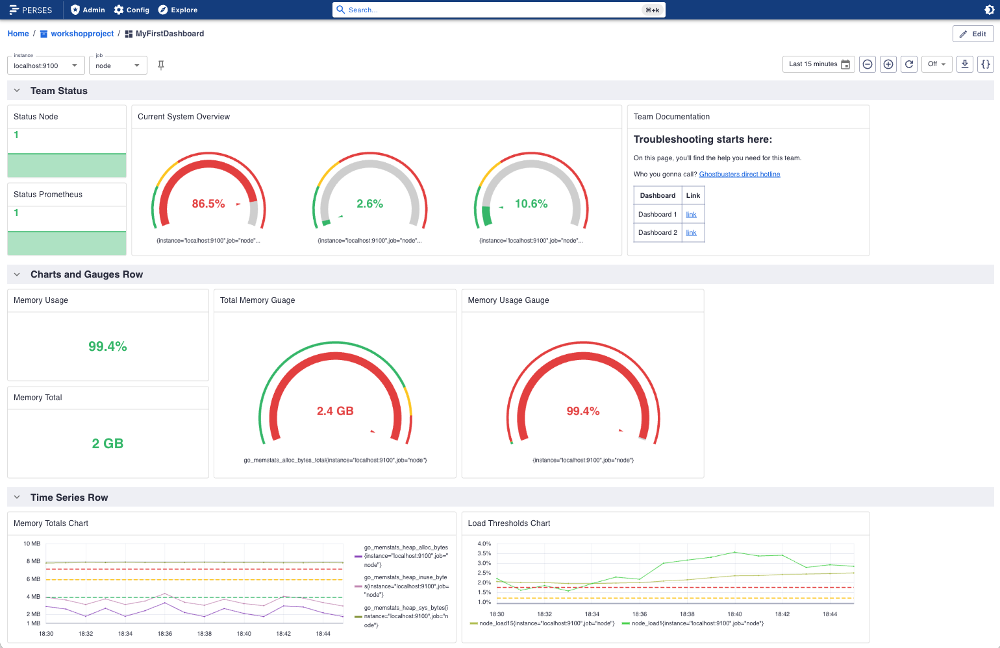
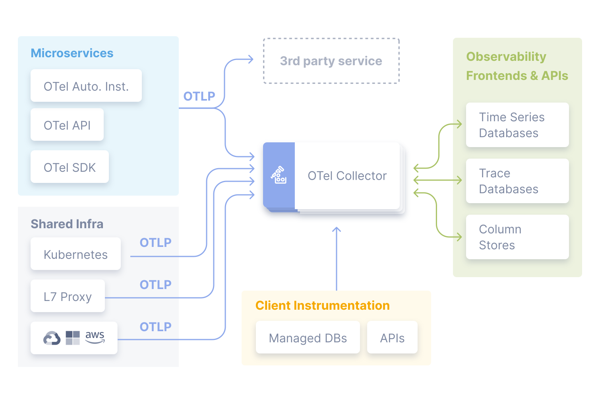
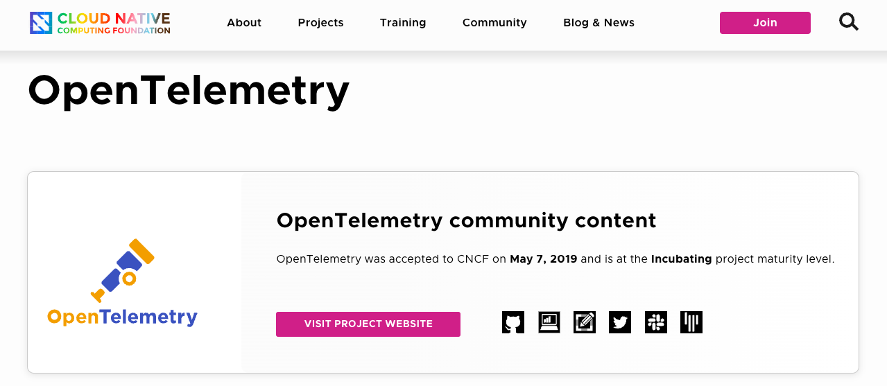
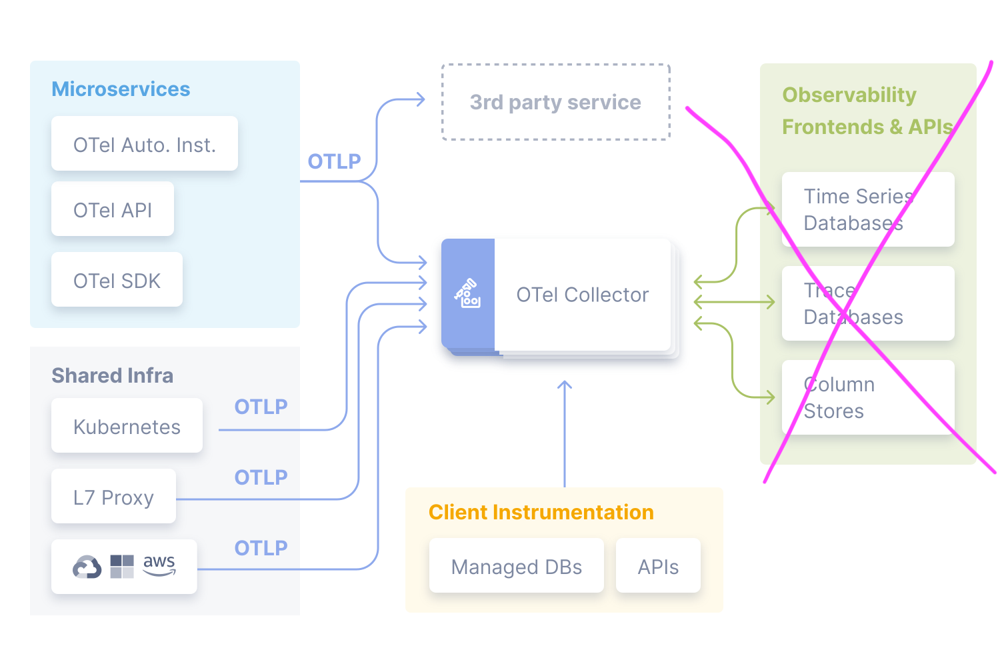
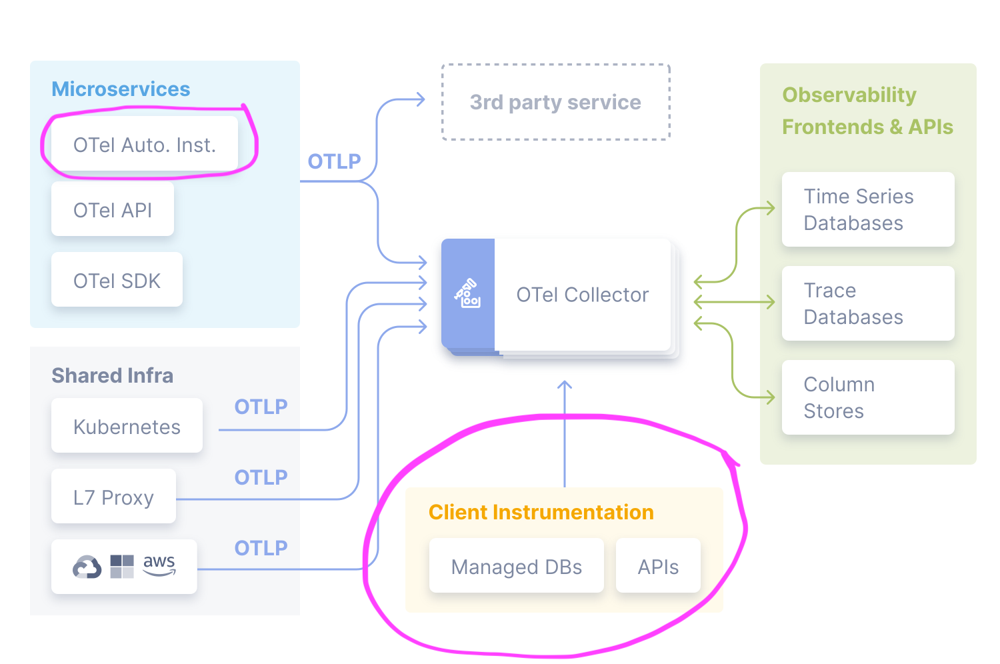
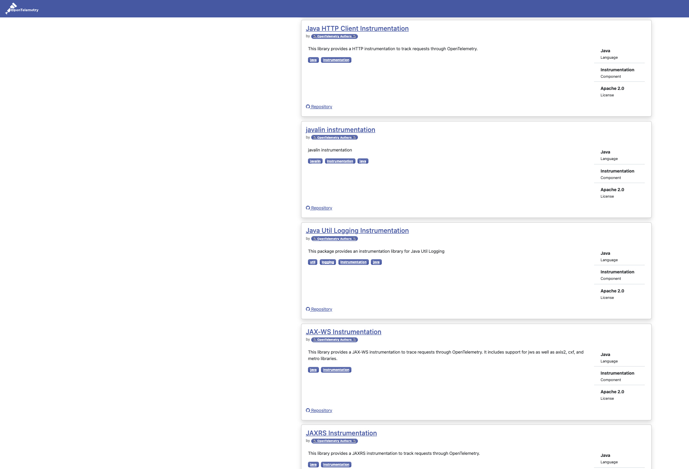
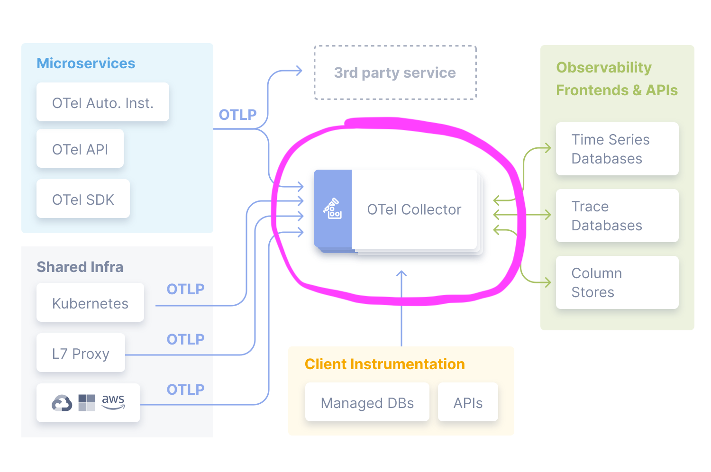

Lab 1 - Observability Primer
Lab Goal
Define common observability and monitoring terms and gain an understanding the role of OpenTelemetry and its components.
Introduction - What is observability?
How effectively you can understand system behavior from the outside using the data it generates.
Introduction - What is monitoring?
The continuous process of watching and tracking system health based on pre-defined set of data.

Introduction - What is telemetry?
The process of recording and sending data from remote components to a backend.
Data types include: metrics, logs, events and traces.
Data types include: metrics, logs, events and traces.
Introduction - What is instrumentation?
The code that records and measure behavior of an application or infrastructure component.
Manual instrumentation includes any code you add and automatic instrumentation is what is provided for you "out of the box".
Manual instrumentation includes any code you add and automatic instrumentation is what is provided for you "out of the box".
Introduction - Hello, OpenTelemetry!
A set of standardized vendor-agnostic SDKs, APIs, and tools for ingesting, transforming,
and sending telemetry to observability back-end(s).

Introduction - Part of the CNCF
OTel was the result of merging OpenCensus and OpenTracing and joined the Cloud Native Computing
Foundation (CNCF) in 2019. Benefits include a broad ecosystem, active community engagement,
support, continued growth and investment.

Introduction - What OpenTelemetry is not
- only a tracing tool
- telemetry backend and storage system
- observability UI

Introduction - OpenTelemetry API/SDK
- API defines data types and how to generate telemetry data.
- SDK defines a language-specific implementation of the API, plus configuration, data processing and exporting.

Introduction - OpenTelemetry language SDKs


Introduction - OpenTelemetry Java Agent
The OpenTelemetry Java Agent provides automatic instrumentation for Java applications. It
attaches to your JVM and automatically captures telemetry from popular libraries and frameworks
like:
- HTTP clients (Apache HttpClient, OkHttp, java.net.HttpURLConnection)
- Web frameworks (Spring, JAX-RS, Servlet)
- Database clients (JDBC, Hibernate, MongoDB)
- Messaging (Kafka, RabbitMQ, JMS)

Introduction - Registry for libraries
Check the
Registry
to see if your favorite Java library is already instrumented.

Introduction - OpenTelemetry collector
The Collector is a proxy that receives, processes and exports telemetry data in OTLP,
Prometheus, and many proprietary tools.

Introduction - OpenTelemetry protocol
The OpenTelemetry Protocol (OTLP) specification describes the encoding, transport, and delivery mechanism of telemetry data between telemetry sources, intermediate nodes such as collectors and telemetry backends.
Read more at OpenTelemetry Protocol Specification
Introduction - OpenTelemetry resource
A Resource represents the entity producing telemetry as resource attributes.
For example, a process producing telemetry that is running in a container on Kubernetes has a process name, pod name, namespace, and possibly a deployment name. All four of these attributes can be included in the Resource.
You can use resource information to better investigate interesting behavior. If your telemetry indicates latency in your system, you can narrow down to a specific container, pod, or Kubernetes deployment.
Read more at Resource Semantic Conventions
For example, a process producing telemetry that is running in a container on Kubernetes has a process name, pod name, namespace, and possibly a deployment name. All four of these attributes can be included in the Resource.
You can use resource information to better investigate interesting behavior. If your telemetry indicates latency in your system, you can narrow down to a specific container, pod, or Kubernetes deployment.
Read more at Resource Semantic Conventions
Introduction - Types of instrumentation
- Automatic - the Java Agent runs alongside your application and adds instrumentation without you needing to make code changes
- Programmatic - a mix of both, where you pull in pre-instrumented dependencies and manually add metadata (e.g. labels)
- Manual - you set up the OTel SDK and add instrumentation code in your application
Introduction - Automatic instrumentation
No code changes - just attach the Java Agent! The agent injects instrumentation at runtime
(this is example only, not a real endpoint or application):
java -javaagent:opentelemetry-javaagent-2.30.0.jar \
-Dotel.service.name=java-demo \
-Dotel.traces.exporter=otlp \
-Dotel.exporter.otlp.endpoint=http://localhost:4318 \
-jar target/my-app.jar
Introduction - Programmatic instrumentation
Add OpenTelemetry Java SDK dependencies and configure the tracer programmatically in our application:
import io.opentelemetry.api.OpenTelemetry;
import io.opentelemetry.api.trace.Tracer;
import io.opentelemetry.sdk.OpenTelemetrySdk;
import io.opentelemetry.sdk.trace.SdkTracerProvider;
import io.opentelemetry.sdk.trace.export.SimpleSpanProcessor;
import io.opentelemetry.exporter.otlp.trace.OtlpGrpcSpanExporter;
public class App {
private static final OpenTelemetry openTelemetry = initOpenTelemetry();
private static final Tracer tracer = openTelemetry
.getTracer("io.chronosphere.App");
private static OpenTelemetry initOpenTelemetry() {
OtlpGrpcSpanExporter exporter = OtlpGrpcSpanExporter.builder()
.setEndpoint("http://localhost:4317").build();
SdkTracerProvider provider = SdkTracerProvider.builder()
.addSpanProcessor(SimpleSpanProcessor.create(exporter))
.build();
return OpenTelemetrySdk.builder()
.setTracerProvider(provider).build();
}
}
Introduction - Manual instrumentation
Create custom spans to trace specific operations in our application code:
import io.opentelemetry.api.trace.Span;
import io.opentelemetry.api.trace.StatusCode;
import io.opentelemetry.context.Scope;
public void handleRequest() {
Span span = tracer.spanBuilder("handleRequest")
.setSpanKind(SpanKind.SERVER)
.startSpan();
try (Scope scope = span.makeCurrent()) {
// Your business logic here
span.setAttribute("request.id", requestId);
span.addEvent("Processing started");
processRequest();
} catch (Exception e) {
span.setStatus(StatusCode.ERROR);
span.recordException(e);
} finally {
span.end();
}
}
Lab completed - Results
We defined common terminology and gained a basic understanding of the OpenTelemetry project
and its components.
Next up, using the Java Agent for automatic instrumentation...
Next up, using the Java Agent for automatic instrumentation...

Contact – are there any questions?
Eric D. Schabell
Technology Advocate Lead
Contact: @ericschabell {@fosstodon.org) or https://www.schabell.org
Technology Advocate Lead
Contact: @ericschabell {@fosstodon.org) or https://www.schabell.org